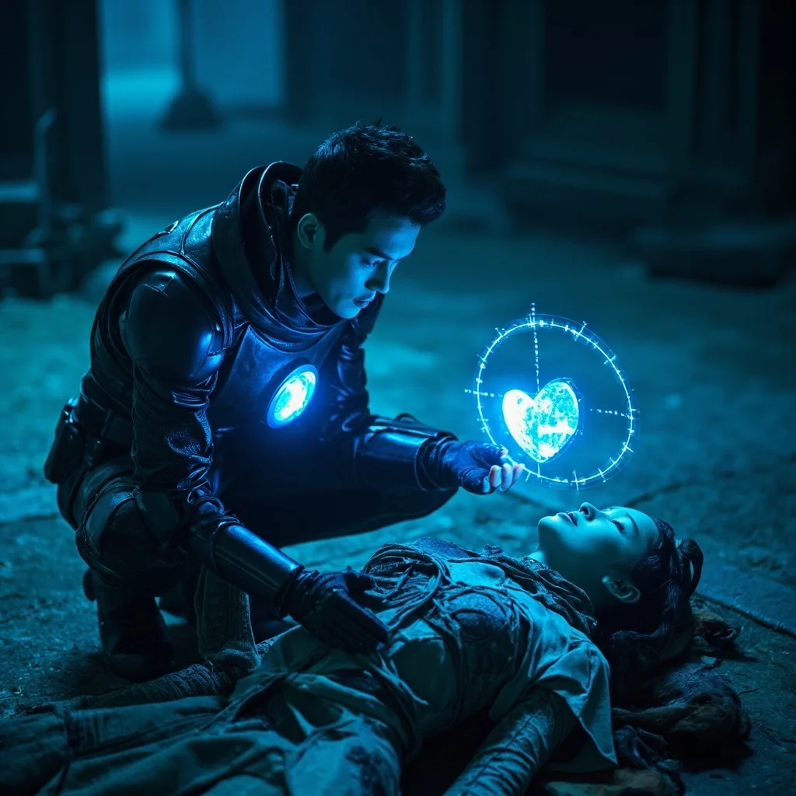

第55章：異世界來客
🎧 點擊播放有聲朗讀
🎧 點擊播放有聲朗讀
就在林塵準備離開之際，天空中的裂縫突然擴大，一道炫目的光芒從中射出。林塵感受到一股前所未有的時空波動，那是更高維度的空間撕裂。墨玄大喊「小心！」然而，已經太遲了。
一個身影從裂縫中跌落，重重地摔在林塵面前。那是一名身穿奇異服飾的女子，年齡約莫二十出頭，黑髮披肩，麵容姣好，但此刻卻昏迷不醒。她的身上沒有任何靈力波動，卻有著某種奇異的能量場。

林塵上前檢查，發現女子的身上沒有任何靈力波動，卻有著某種奇異的能量場。「不是修真者，」墨玄分析道，「但也不是普通人。她的體內似乎有某種另類的能量。」林塵眉頭緊皺，難道這就是傳說中的異世界來客？
就在此時，女子緩緩睜開眼睛。她打量著四周古老的建築和飄浮的靈力光芒，露出難以置信的表情。「不可能……我明明應該回到自己的世界……」她喃喃自語，眼中閃過一絲驚慌與恐懼。
林塵微微一笑，伸出手表示歡迎：「既然妳來到了這裡，那就是我們的客人。妳放心，我們會幫助妳找到回家的方法。」蘇璃聞言，眼中閃過一絲希望的光芒。就這樣，來自異世界的蘇璃，正式加入了林塵的行列。